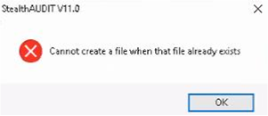
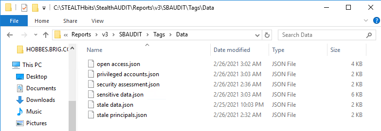

Summary: Post upgrade (known in SA11), launching the console fails with "Cannot Create a file when that file already exists"
Issue: "Cannot Create a file when that file already exists"

Instructions:
1. Click OK on the error to close StealthAudit
2. Open File Explorer and browse to the install path or type %sainstalldir%
3. Locate the following file GlobalOptions.XML
4. Rename GlobalOptions.XML to GlobalOptions.XML.old
5. Browse to %sainstalldir%Reports\v3\SERVERNAME\Tags\Data (Where SERVER = The StealthAudit node name)
6. Confirm the following files are missing:

7. Log into a lab or other resources of the same version
8. Zip these and extract them into the problem server.
9. Launch StealthAudit to ensure it functions
10. If an issue is seen with the SQL connection profile is seen upon launch, create a new profile pointing to the old database
Channel: Internal
Submitted by: Doug Seaborn / William Lavary
Product: SA,
Affected Versions: 11.x (Possibly 10.x)
Affected Module: Core Functionality
KB Type: Bug / Known Issue